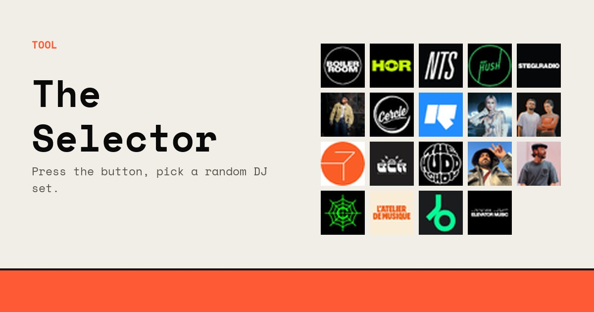
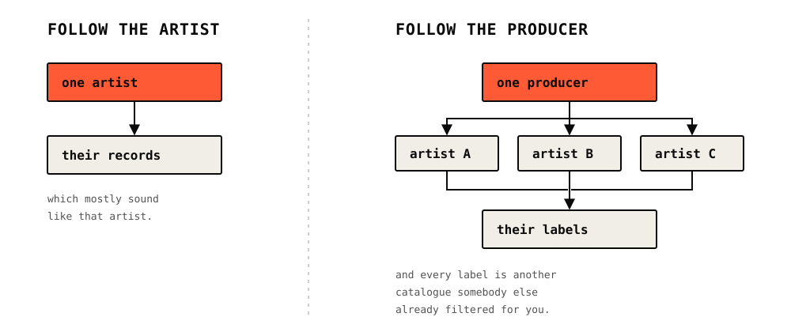
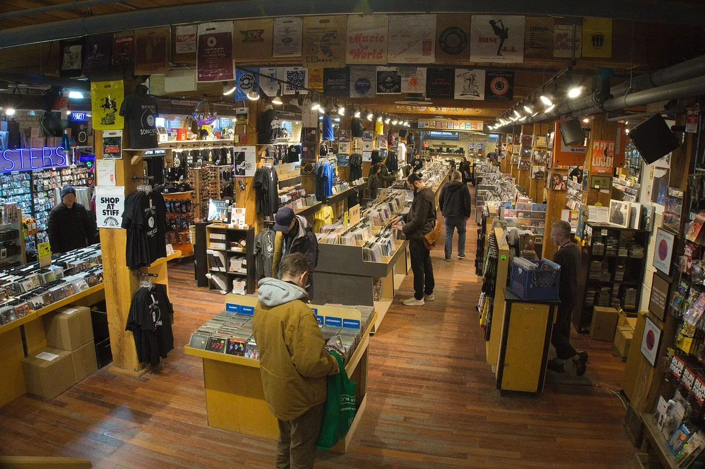
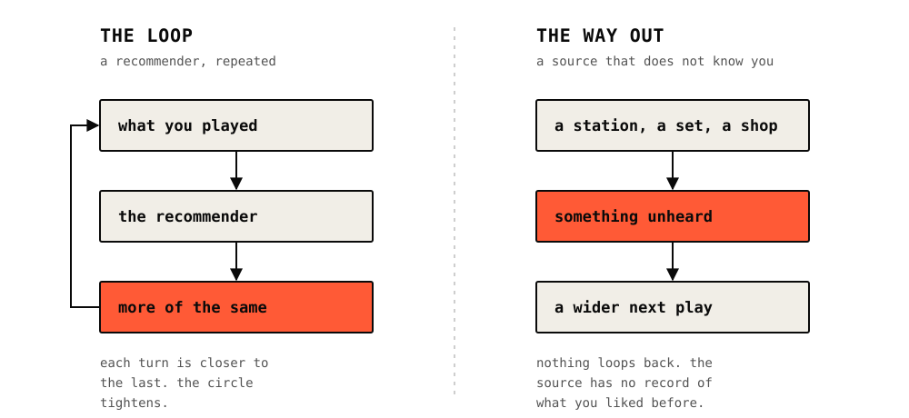

Guide
How to find new music
Ten ways to hear something you have not heard before, none of which depend on a machine knowing what you played last week. Ordered by how much work they take.
Too much music, and you keep playing the same things.
You have a problem that would have sounded absurd twenty years ago: there is too much music and you keep listening to the same things.
The reason is not laziness. It is that almost every route into music now runs through a recommendation engine, and a recommendation engine can only work from what you already played. It is built to be right, and being right means giving you a version of what you liked last week. That is a useful machine for a commute and a terrible one for finding anything you did not already half know.
Everything below is a way around that: ten music discovery methods that do not depend on a machine knowing your history. None of it requires deleting Spotify. It is a new music discovery routine rather than a single trick, and the methods are ordered by how much work they take, starting with the ones where somebody else has already done the listening.
| Method | Effort | What it is |
|---|---|---|
| Community radio | None | NTS, Rinse FM, The Lot Radio, and the city stations nobody outside their city hears |
| A whole DJ set | None | An hour of records somebody spent years learning to sequence |
| The Selector | One click | 62,877 sets from 37 channels, picked at random, nothing remembered about you |
| Producer credits | A minute | One producer leads sideways into a whole scene |
| Every Noise at Once | A minute | A map of nearly 6,000 genres. Data frozen since 2023 |
| Record labels | An afternoon | A narrow label is a filter somebody else maintains for free |
| Bandcamp | An afternoon | Artist-written tags, and the collections of people who bought the record |
| Critics and AOTY | Ongoing | Find writers, not publications. Read the lists in spring |
| Forums and Discord | Ongoing | The part of music recommendation that is still people |
| Discogs and RateYourMusic | Ongoing | Databases that connect records to records, not listeners to listeners |
No effort
1. Community radio.
The single best answer, and the one most people skip because they assume radio means the thing in a car.
Online community radio is a handful of people in a room playing records they care about for two hours at a time. There is no playlist algorithm, no A&R department and usually no advertising. What you hear is what a specific person thought was worth playing that afternoon.
NTS Radio is the one most often named. It broadcasts from London, Manchester, Los Angeles and Shanghai, runs two channels around the clock, and its archive holds thousands of shows you can start anywhere. Rinse FM came out of pirate radio and still sounds like it, heavy on UK bass, garage and jungle. The Lot Radio broadcasts from a repurposed shipping container on a triangle of land in Brooklyn, and its schedule is closer to a local noticeboard than a station.
Then there are the ones nobody outside their own city talks about, and this is where it gets interesting. Kiosk Radio broadcasts from a wooden shack in a Brussels park. Seoul Community Radio, Bangkok Community Radio, Manila Community Radio, Radio Rudina in the Balkans and Boxout.fm in Delhi all do the same job for their own scenes. They upload constantly, and almost nobody outside their city ever hears any of it.
The catch with radio is that it is live and you are not always free at 3pm on a Tuesday. Which is what the next two methods solve.
No effort
2. Whole DJ sets, not singles.
A DJ set is an hour or more of records that somebody spent years learning how to put next to each other.
That is the argument in one sentence. When you skip through singles you are auditioning tracks in isolation, stripped of the order and context that make them work. When you listen to a set you get somebody else's taste applied over a whole evening, including the records you would never have clicked on.
It is also the most efficient way to discover new artists there is. One good hour can introduce you to twenty artists, and you will remember the ones that stood out because you heard them in a sequence rather than as a thumbnail.
The place to find them is YouTube, where Boiler Room, HÖR, Cercle, Dekmantel, Keep Hush and every radio station above upload full recordings. The problem is the same one you started with: there are tens of thousands of them, the names mean nothing to you, and you cannot tell from a name whether an hour is worth your evening.
One click
3. The Selector.
This is our own tool, and it exists because of the paragraph above.
It holds 62,877 recorded DJ sets from 37 channels, which is the radio and the DJ set method in one place. Press the button and one plays. Press it again and you get a different one. There is no account, no history, and it does not learn your taste, which is the entire point rather than a feature we have not built yet.

You can narrow it first if you want. Pick a channel, pick a genre, or pick a mode: everything, the well-watched end, the quiet end, or the sets that are loved out of all proportion to how many people found them. Then hand the decision over.
The quiet end is where it earns its keep. A large part of the catalogue has almost no views, not because the sets are bad but because a Tuesday show on a Manila station has no route to anyone outside Manila. That is the closest thing to genuine discovery in this list, and it costs one click.
A minute
4. Follow the producer, not the artist.
The most underrated method, and it takes about thirty seconds to learn.
Look at a record you love and find who produced it. Then find everything else they produced. Producers have a sound, they work across artists, and they usually work in a scene, so following one leads you sideways into a whole set of people you had no reason to know about.

This works better than following artists because artists are a brand and producers are a taste. An artist's back catalogue mostly sounds like that artist. A producer's back catalogue is twenty artists filtered through one pair of ears.
Discogs credits are the easiest way to do this. Look up a release, read the credits, follow the names.
A minute
5. Every Noise at Once.
A map of nearly six thousand genres, each one a clickable dot that plays a representative track.
It was built by Glenn McDonald while he worked at Spotify, and it is the single strangest and most useful music object on the internet. Click "chillwave" and hear chillwave. Click "vintage tango" or "escape room" or "deep filthstep", which are all real genres it tracks, and hear those.
One honest caveat that the videos recommending it tend to skip: McDonald was laid off from Spotify in 2023, and the site's data has largely stopped updating since. It is still an extraordinary way to find a genre you did not know existed. It is no longer a current picture of what is being released.
An afternoon
6. Labels that stick to one sound.
A good record label is a filter that somebody else maintains for free.
The ones worth following are the small ones with a narrow remit, because the narrowness is the point. If a label has put out thirty records you liked, the thirty-first is a better bet than anything an algorithm will hand you, and you can work through a back catalogue in an afternoon.

Find them the same way you find producers: look at the label on a record you love, then look at what else that label released. Bandcamp makes this easy, because labels have pages and those pages list everything.
An afternoon
7. Bandcamp.
Bandcamp is a shop, which is exactly why it works differently from a streaming service.
Because artists are selling rather than accruing fractions of a penny per play, the pages are made by the people who made the music. The tags are chosen by them. The "supported by" list under each release shows real people who bought it, and clicking through to a stranger's collection is one of the best discovery mechanisms anyone has built, mostly by accident.
Bandcamp Daily, its editorial arm, publishes genre guides and label profiles that are written by people who know the scene rather than optimised for a search engine. It is the closest thing to a music magazine that still functions as one.
Ongoing
8. Critics and end-of-year lists.
The oldest method and still a good one, with a caveat.
Music journalism is worth reading when you find a specific writer whose taste you can calibrate against your own. That is different from reading a publication. The goal is to find two or three people who are consistently wrong in a direction you understand, because a critic you reliably disagree with is as useful as one you agree with.
Album of the Year aggregates critic and user scores across publications and is a fast way to see what a year looked like from outside your own listening. End-of-year lists are best read the following spring, when the hype has drained out and only the records people actually kept playing are still being mentioned.
Ongoing
9. Forums and communities.
Most music recommendation online is now algorithmic. Forums are the part that is not.
Genre specific forums, Discord servers and group chats are where people who care too much about one narrow thing tell each other what to listen to. The signal to noise is worse than a curated list and the ceiling is much higher, because nobody is optimising for engagement and somebody has usually already found the thing you are about to find.
The trick is to lurk in one place for a while rather than joining ten. A single active community whose taste you come to understand is worth more than a subscription to all of them.
Ongoing
10. Discogs and RateYourMusic.
Two databases built by obsessives, both useful for the same reason: they connect records to other records.
Discogs is a catalogue of physical releases with full credits, so it answers questions no streaming service can. Who played bass on this. What else did this label put out in 1994. What are the other twelve versions of this record. Its recommendation is not a machine, it is the structure of the credits themselves.
RateYourMusic is a rating and list site with a well-earned reputation for being run by people with very specific opinions. Its genre pages, its charts by year and its user lists are a good way to work backwards through a style you have just discovered you like.
A note on the algorithm.
None of this is an argument that recommendation engines are useless. They are very good at what they do, which is keeping you listening.

The point is narrower. An algorithm optimises for the next play, and the next play that is most likely to succeed is one close to the last. Repeated over months that produces a taste that curves gently inward. Everything in this list is a way of stepping outside that curve on purpose, and most of the methods take a couple of minutes.
If you only take one thing from the list, take the first three. Put a community radio station on while you work. When you find a show you like, listen to the whole thing. And when you cannot face choosing, let something else choose for you.
Finding new music: FAQ.
What is the best way to discover new music?
Community radio, because somebody has already done the listening for you. NTS, Rinse FM and The Lot Radio are the most named, and dozens of smaller city stations do the same job for their own scenes. If you cannot listen live, the same stations upload full DJ sets to YouTube.
How to discover new music without an algorithm?
Use sources that are not personalised. Radio schedules, record label catalogues, producer credits on Discogs, forums, and random selection. A tool that picks at random and keeps no history about you cannot narrow your taste, because it does not know what your taste is.
How to find underground music?
Follow the smaller community radio stations rather than the famous ones, look at what sets have almost no views rather than the most-watched, and follow producers and labels rather than artists. Obscurity is usually a distribution problem, not a quality one.
Are music discovery apps any good?
They are good at adjacency and bad at surprise. An app that recommends from your listening history will find you more of what you already like, which is useful and is not discovery. Use one, and use something unpersonalised alongside it.
How to find new music on Spotify?
Spotify's own tools are adjacency engines, so use them for the middle of the night and something else for discovery. The quickest fix is to leave the app for the first step: pick a station, a label or a DJ set somewhere unpersonalised, then search for what you heard. Every method on this page works alongside a Spotify subscription rather than instead of one.
How to find music you like when nothing sounds new?
Change the shape of the input rather than the input itself. If singles have stopped landing, listen to an hour-long set instead. If your genre has gone stale, use a genre map to find the one next to it. Most listening ruts are a format problem, not a taste problem.
Are music discovery websites better than apps?
They tend to be, because the good music discovery tools are databases rather than recommenders. Every Noise at Once, Discogs, RateYourMusic and Bandcamp all let you move sideways through credits, labels and genres, which is something a personalised feed cannot do by design.
Is Every Noise at Once still working?
The site is still up and its genre map still plays. Its data has largely stopped updating since its creator left Spotify in 2023, so treat it as a map of genres rather than a current release feed.
How to find new artists, not just new songs?
Follow credits. Find who produced, mixed or featured on a record you love, then follow that person's other work. Producers work across many artists, so one name leads to a whole scene rather than to one back catalogue.
What is the fastest way to hear something completely new?
Play a full DJ set from a station in a city you have never been to. One hour, twenty artists, none of them chosen by anything that knows who you are.
Sources.
- NTS Radio
- Rinse FM
- The Lot Radio
- Every Noise at Once
- Bandcamp Daily
- Discogs
- RateYourMusic
- Album of the Year
- Set counts and view figures are measured from this site's own catalogue of 62,877 recorded DJ sets across 37 channels, as of September 2026.
Continue reading
Read next.
 A01Guide / Breakbeat / ~22 min
A01Guide / Breakbeat / ~22 minBreakbeat Music: History, Sound and Evolution
From funk breaks and pirate radio to cracked VSTs and modern bass hybrids.
Read article → A02Guide / Jungle / ~18 min
A02Guide / Jungle / ~18 minJungle Music: From Roots to Revival
Pirate radio, dubplates, MC energy and the global return of a distinctly Black British sound.
Read article → A03Timeline / UK music / ~27 min
A03Timeline / UK music / ~27 minThe Evolution of UK Electronic Music
Ten sounds that travelled from regional underground scenes into global culture.
Read article →